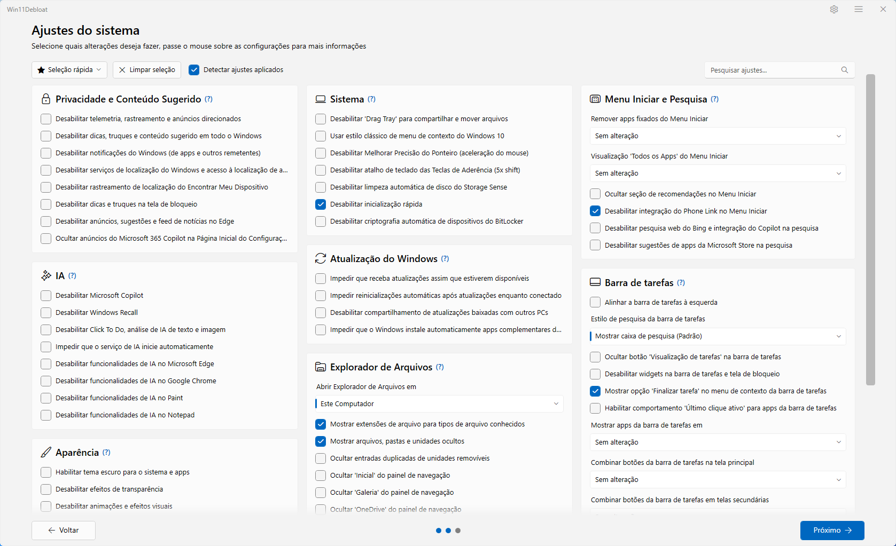

Menos sugestões.
Mais foco.
Encontre opções para ajustar telemetria, anúncios e conteúdo sugerido do Windows.
Entender os ajustesMAIS CONTROLE. MENOS DISTRAÇÕES.
Deixe espaço para o que importa. Personalize a interface, ajuste a privacidade e remova os aplicativos que você não usa.
FAMILIAR DESDE O PRIMEIRO CLIQUE

Ajustes organizados por categoria. Passe o mouse para entender cada opção antes de escolher.
MENOS ATRITO NO DIA A DIA
Escolha o que combina com seu uso. Sem precisar mudar tudo de uma vez.
Encontre opções para ajustar telemetria, anúncios e conteúdo sugerido do Windows.
Entender os ajustesPersonalize o Menu Iniciar, a barra de tarefas e o Explorador de Arquivos em um só lugar.
Explorar possibilidadesRevise a lista de aplicativos pré-instalados e selecione quais deseja remover.
Ver a lista de aplicativosSEM COMPLICAÇÃO
O pacote portátil reúne o iniciador e os arquivos necessários. Mantenha tudo na mesma pasta.
Abrir o passo a passo completo ↗Escolha o arquivo Win11Debloat-com-EXE.zip na página de downloads.
Extraia o ZIP inteiro, execute Win11Debloat.exe e confirme o pedido de administrador.
Leia as descrições, selecione seus ajustes e revise o resumo. Abrir o programa não aplica alterações automaticamente.
BOM SABER ANTES DE COMEÇAR
A ajuda também está a um clique dentro do programa.
O pacote é portátil. Extraia todos os arquivos e mantenha as pastas junto do EXE. Ele usa o Windows PowerShell 5.1 e solicita permissão de administrador para abrir o programa.
O projeto atende Windows 10 e Windows 11. Alguns ajustes dependem da edição e da build do seu sistema. Consulte a documentação dos recursos para conferir as limitações.
Muitos ajustes podem ser revertidos pela interface ou pelo backup do Registro. Esse backup não reinstala os aplicativos removidos. Leia o guia de restauração antes de aplicar ajustes.
O executável publicado ainda não possui assinatura digital, então o Windows pode mostrar um aviso de editor desconhecido ou de reputação. Não desative a proteção do computador para executá-lo. Os arquivos e o código-fonte estão disponíveis no GitHub para consulta.
Visite o repositório do projeto e a Wiki em português. A distribuição segue a licença MIT, com os avisos de direitos autorais preservados.
UM NOVO OLHAR PARA O SEU PC
Gratuito e de código aberto.